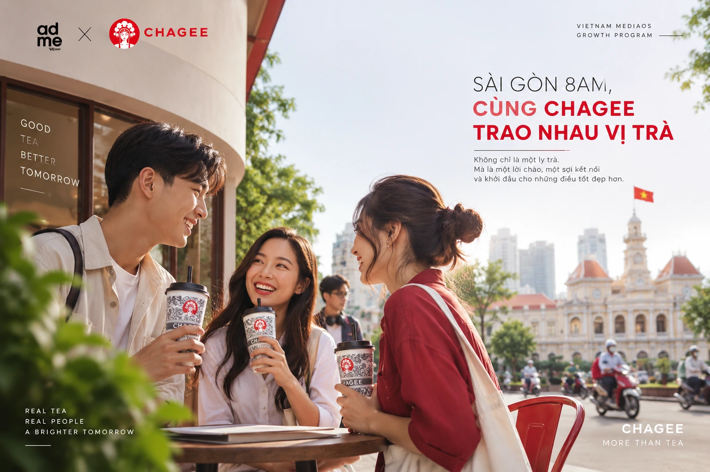
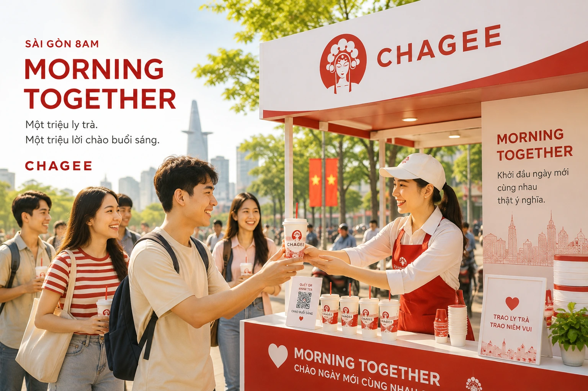
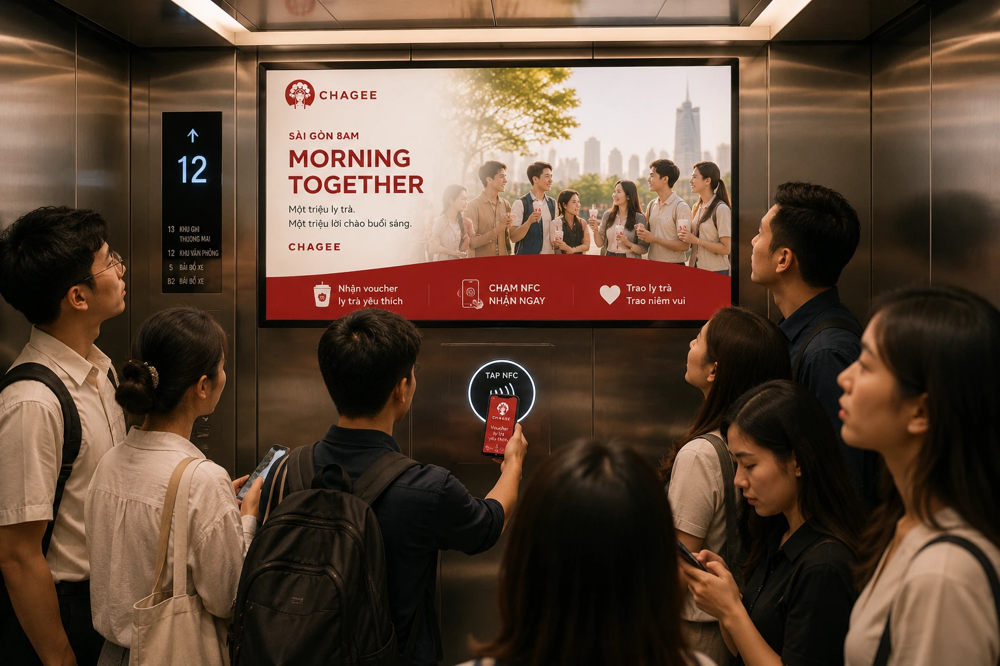
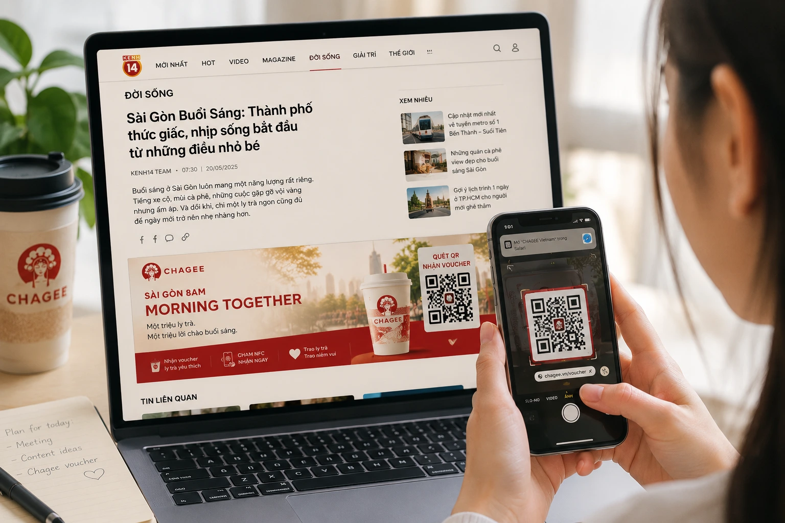

Nhấn ESC hoặc click ra ngoài để đóng
Từ platform Sài Gòn 8AM đến CHAGEE Morning Together.
Biến khoảnh khắc thành phố bắt đầu ngày mới thành một consumer moment có thể nhìn thấy, tham gia, nhận quyền lợi và lan tỏa — với CHAGEE là thương hiệu trà sở hữu trải nghiệm buổi sáng dịp 2/9.
Sài Gòn 8AM là concept mở của ADMICRO mediaOS: tập trung vào khoảnh khắc thành phố bắt đầu ngày mới, nơi media, mobility, delivery, office, retail và activation có thể được kết nối quanh cùng một hành vi tiêu dùng. Concept này có thể được phát triển cho nhiều ngành hàng; mỗi thương hiệu sẽ sở hữu một vai trò khác nhau trong cùng “morning economy”.
Với CHAGEE, “8AM” được custom thành Morning Together: thương hiệu không chỉ xuất hiện trong buổi sáng mà trao cho người trẻ một lý do để gặp nhau, nhận trà và bắt đầu ngày mới cùng nhau.
Khi độ phủ cửa hàng đã hình thành, bài toán không còn dừng ở việc được biết đến. Thách thức tiếp theo là tạo thêm những consumer moments đủ gần gũi để CHAGEE được nhớ đến, lựa chọn và chủ động chia sẻ trong đời sống của người trẻ.
CHAGEE hiện đại hóa văn hóa trà phương Đông: nguyên lá, pha tươi, trải nghiệm hiện đại và chú trọng wellbeing.
CHAGEE nhìn tương lai của trà qua “affection of young customers” — tình cảm của người tiêu dùng trẻ.
22 cửa hàng tại TP.HCM tạo ra một merchant network đủ dày để truyền thông không dừng ở màn hình mà đi tới trải nghiệm thực tế.
Biến CHAGEE từ một địa điểm “đi uống trà” thành một phần của nhịp sống, các cuộc gặp và khoảnh khắc chung của người trẻ.
Ngày lễ tạo attention tự nhiên. Nhưng brand love đến từ cách thương hiệu bước vào một hành vi thật. mediaOS chuyển một dịp lễ thành consumer moment: đúng giờ, đúng nơi, có quyền lợi và có hành động nối tiếp.
Voucher, sampling hoặc booth chỉ tạo traffic tại một số điểm.
Online, mobility, office, social và 22 cửa hàng cùng nói chung một lời chào.
Mỗi lượt xem có đường dẫn tới trải nghiệm, mỗi trải nghiệm có khả năng tạo memory và advocacy.
Tận dụng 22 cửa hàng TP.HCM và activation booth như mạng lưới tiếp nhận nhu cầu, biến độ phủ truyền thông thành sampling, voucher claim, redemption và repeat visit.
Tăng mức độ gần gũi, relevance và preference bằng một trải nghiệm có tính chia sẻ — nơi CHAGEE hiện diện như “người bạn trà” trong nhịp sống của thành phố.
Tạo một consumer moment quy mô lớn quanh buổi sáng dịp 2/9: người dùng thấy → nhận lời mời → lấy quyền lợi → nhận trà → chia sẻ → được retarget để quay lại.
CHAGEE gửi một lời chào buổi sáng tới thành phố bằng thứ gần với DNA thương hiệu nhất: một ly trà. “Together” không chỉ là tagline; nó trở thành cơ chế kết nối giữa media, platform, booth, cửa hàng và cộng đồng người trẻ.

“Một triệu ly trà. Một triệu lời chào buổi sáng.” vẫn là master expression có khả năng scale. Bên dưới là các hướng tagline có thể dùng cho KV, social, DOOH hoặc activation tùy vai trò từng touchpoint.
Quy mô lớn, giàu tính platform; phù hợp hero campaign.
Có nhịp, gắn trực tiếp với concept thành phố và morning ritual.
Ngắn, tự nhiên, dễ chuyển thành CTA tại booth và social.
Ấm, gần gũi, đặt trọng tâm vào connection thay vì promotion.
Nhấn vào hành vi trao – nhận, phù hợp Tea for Two.
Tinh gọn, có địa danh và nhịp lễ hội nhưng tránh khai thác biểu tượng quốc gia quá trực diện.
mediaOS không ghép các kênh rời rạc. Hệ thống huy động media, daily platforms, merchant, brand alliance, trust và activation quanh cùng một consumer moment.
Premium publisher, Kênh14/CafeF, social, Focus Media, DOOH, retargeting.
Nhóm nền tảng giao nhận và di chuyển như GrabFood, beFood, Xanh SM Ngon, ShopeeFood có thể tham gia như một lớp commerce-distribution: phát mã, đồng tài trợ quyền lợi, giao trà hoặc dẫn người dùng về cửa hàng/booth.
22 cửa hàng CHAGEE + booth/pop-up là các điểm claim, nhận mẫu, redeem và quay lại.
Payment, mobility, office, lifestyle partner có thể mở rộng quyền lợi và đồng truyền thông.
Ngữ cảnh 2/9 được xử lý tinh tế: lời chào thành phố, kết nối cộng đồng, không lạm dụng biểu tượng.
QR/NFC → Morning Tea Pass → sampling/voucher → redemption → share → retarget.
Đây là cách campaign được thiết kế và cũng là cách ADMICRO đo xem hệ thống có thực sự tạo giá trị vượt ra ngoài media reach hay không.
Chiếm morning attention bằng nội dung, social, display, DOOH và retargeting đúng daypart.
QR/NFC, Tea Pass, booth interaction và store journey giúp việc nhận quyền lợi không bị đứt gãy.
Voucher claim, sampling, store visit, redemption và repeat offer chuyển participation thành consumption.
Brand lift, advocacy, UGC, verified redemption, new member acquisition và tài sản first-party data.
Hero activation phải đủ đơn giản để scale nhưng đủ “có chuyện” để tạo brand memory.
Booth đặt tại office cluster, mall / youth hub hoặc điểm có morning footfall. Người dùng scan QR/NFC, làm một tương tác rất ngắn — chọn lời chào, ghép đôi bạn trà, check-in hoặc tạo “morning mood” — để nhận sample / Tea Pass.
Quyền lợi số có thời hạn; nhận qua QR/NFC và dùng tại booth hoặc cửa hàng gần nhất.
Landing tự động gợi ý cửa hàng gần nhất, giờ hoạt động, quyền lợi và điều hướng.
Mechanic khuyến khích đi cùng bạn: claim cho mình và gửi một invitation cho người khác, tăng đúng tinh thần Together.
Micro interaction tạo lời chào/visual cá nhân hóa để share social sau khi claim.
Sampling có kiểm soát tại booth, office, campus hoặc event point; mỗi mẫu có mã nối về hành trình số.
Sau redemption, hệ thống gửi quyền lợi quay lại trong 7–14 ngày để campaign không kết thúc ở ly đầu tiên.

Người tiêu dùng có thể bắt đầu từ media, DOOH, delivery app, booth hoặc cửa hàng. mediaOS đảm bảo các hành trình khác nhau vẫn hội tụ về cùng một cơ chế nhận quyền lợi, redemption và measurement.
Attention-first
Banner / native / social vào khung giờ sáng.
Đi tới Morning Tea Pass.
Booth hoặc CHAGEE gần nhất.
Nhận sample / voucher / ưu đãi.
UGC + second-cup retargeting.
Location-first
Thông điệp xuất hiện tại lift, lobby hoặc điểm di chuyển.
Nhận Tea Pass ngay tại touchpoint.
Gợi ý cửa hàng / booth thuận tiện.
Nhận trà và tương tác Together.
Redemption quay về dashboard.
Experience-first
Visual / sampling tạo stopping power.
Morning mood / Tea for Two.
Tạo digital identity qua QR.
Nhận sample hoặc redeem tại store.
Follow-up offer + member acquisition.
Scale awareness, contextual storytelling, homepage/daypart domination và native content.
Tạo frequency, social proof, UGC amplification và kéo lại người đã claim nhưng chưa redeem.
Chạm người trẻ khi họ rời nhà, vào thang máy, tới mall hoặc điểm vui chơi.
GrabFood, beFood, Xanh SM Ngon, ShopeeFood và các partner tương đương có thể mở thêm hai nhánh conversion: đổi quyền lợi tại cửa hàng hoặc áp mã trực tiếp trên nền tảng giao nhận. Việc tích hợp cụ thể phụ thuộc listing, inventory và partnership được xác nhận khi triển khai.
Sampling và interaction tạo memory vật lý, đồng thời thu digital signal bằng QR/NFC.
Merchant network biến campaign thành visit, redemption, purchase và membership.
Không chỉ review đồ uống; kể câu chuyện “morning together” của các nhóm bạn trẻ.
Media exposure → claim → route → redemption → repeat, nhìn trên cùng một measurement layer.
Hai ví dụ minh họa cho cách attention được nối trực tiếp với hành động: chạm NFC tại LCD và quét QR từ premium content để nhận quyền lợi.


Với thời điểm hiện tại giữa tháng 8, campaign cần khóa concept và mechanics rất nhanh, ưu tiên execution có khả năng scale bằng asset và hệ thống hiện hữu.
Target số tuyệt đối cần được chốt sau khi có media investment, sampling inventory và mechanics cuối cùng. Proposal này khóa trước logic KPI.
Phần số tiền được để mở để đưa vào P&L sau khi chốt mechanics, inventory và đối tác.
Premium media, social, DOOH, platform, retargeting.
KV, video, adaptation, content, creator assets.
Booth, manpower, logistics, product inventory, POSM.
Landing, QR/NFC, CRM flow, dashboard, measurement.
Mobility, office, payment, merchant / co-promotion cost.
Brand lift, perception pulse, post-campaign analysis.
Legal, procurement, coordination, reporting, contingency.
Case film, documentation và commercial asset cho lần scale tiếp theo.
Một lời chào buổi sáng, một quyền lợi có thể nhận ngay, một ly trà thật trong tay và một lý do để quay lại — đó là cách mediaOS biến media coverage thành một trải nghiệm tạo Brand Love.
Các dữ kiện thương hiệu được grounding từ nguồn chính thức / nguồn công khai hiện hành. Các mục tiêu định lượng trong proposal là planning framework, chưa phải cam kết KPI.